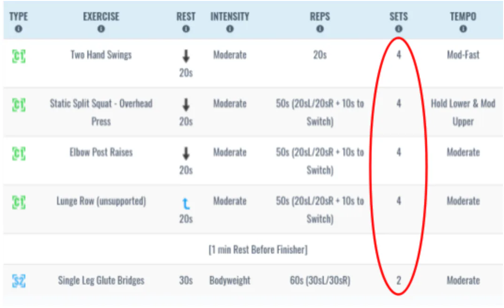
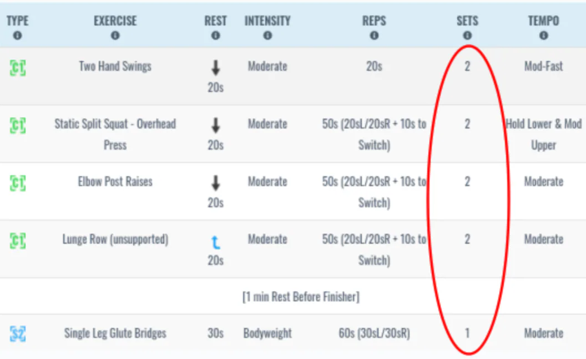

N53 · [KBL] Kettlebell Lifestyle: What You Need to Know
Hello {first_name},
Congratulations on starting Kettlebell Lifestyle! This program is designed to be different from most training plans. Usually, most plans are exclusively focused on the sets and reps, but if you want your whole body to be strong and feel great, you’ll need more.
While working muscles hard can deliver clear feedback in the form of sore muscles, it isn't the most important thing. In fact, the more important progress comes when you learn to feel the effect of your training on your energy levels, movement abilities, level of fitness, and overall health.
Here are some of the features of Kettlebell Lifestyle (KBL) designed to help you improve performance by learning to notice and cultivate what makes sustainable performance possible.
Onboarding Questions These 12 questions will place you into the appropriate level. Pay attention to the questions because they are written to help you gain awareness around your current level. Then keep your eye out for the weekly bonus material sent by email each week. Some of the bonus topics are sure to address issues the onboarding questions bring up.
*Note about shift workers and trainers
Daily Training Readiness Assessment Each day you’ll be prompted to answer 5 questions that gauge how ready your body is for the stress of training. The importance of adjusting your training based on how your body feels is one of the biggest keys to longevity.
Your answers will customize the volume (namely sets) of your training for the day.
*Note: The personalized changes for your training plan show up in the written workout located under the guided workout video.
The table below reflects 100% volume:  The table below reflects reduced volume by reducing the number of sets:  The video workout will always shows the workout with 100% volume for someone who was feeling great that day. Look at your chart and follow your personalized workout.
If your answers show that training would be a detrimental stress for your body, the chart will tell you to suggest to other alternatives such as: Working In, Stretching, or a Total Test Day. But don’t fear! That day’s workout will show up next time and you’ll pick up without missing anything.
What to expect over the next 9 weeks:
What to do when you finish: This program is designed so you can go through it again and again. In addition, you’ll be emailed a resource toward the end of the first 9 weeks that will guide you through adapting KBL to specific goals such as improving cardio, strength, or muscle mass.
Reach out at this email address or on social media if you have any questions. Enjoy how you feel when you train intentionally! -Mike |